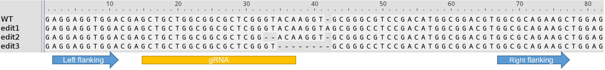

!!! Make sure both the left and the right flanking sequences are in the same read or merged read in the fastq file !!!
This program summarize CRISPR editing results based on the idea of CRIS.py. You can read the paper here. The basic idea is summarized in its Fig. 1. 
All three sequences (the left and right flanking sequences and the gRNA sequences) should be on the same strand as the template. If you are working on polyploid species, your left or right flanking sequences should be unique to your template (subgenome) if the fastq files include homolog/homeologs.
You can click the "Example input" button to get the example inputs (then select the example fastq.gz files https://github.com/pinbo/CRISjs/tree/main/example-input).
If you have a lot of fastq files, you may use the standalone command line program CRISgo.